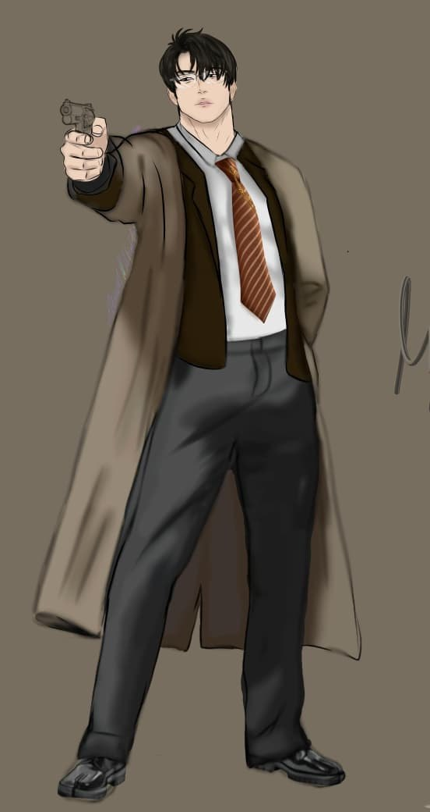
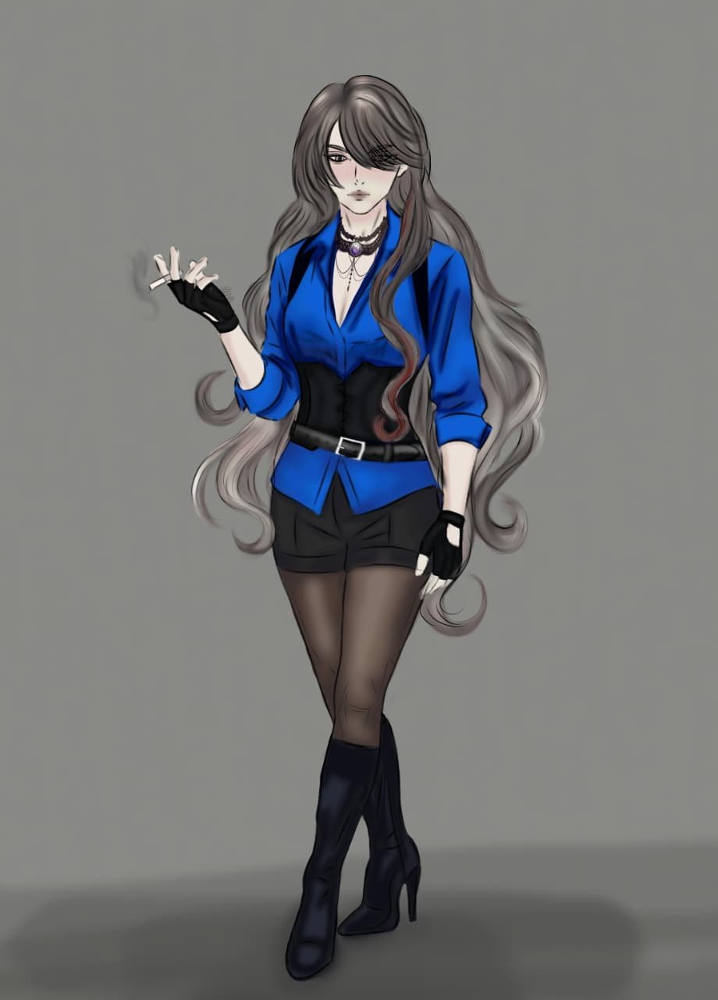
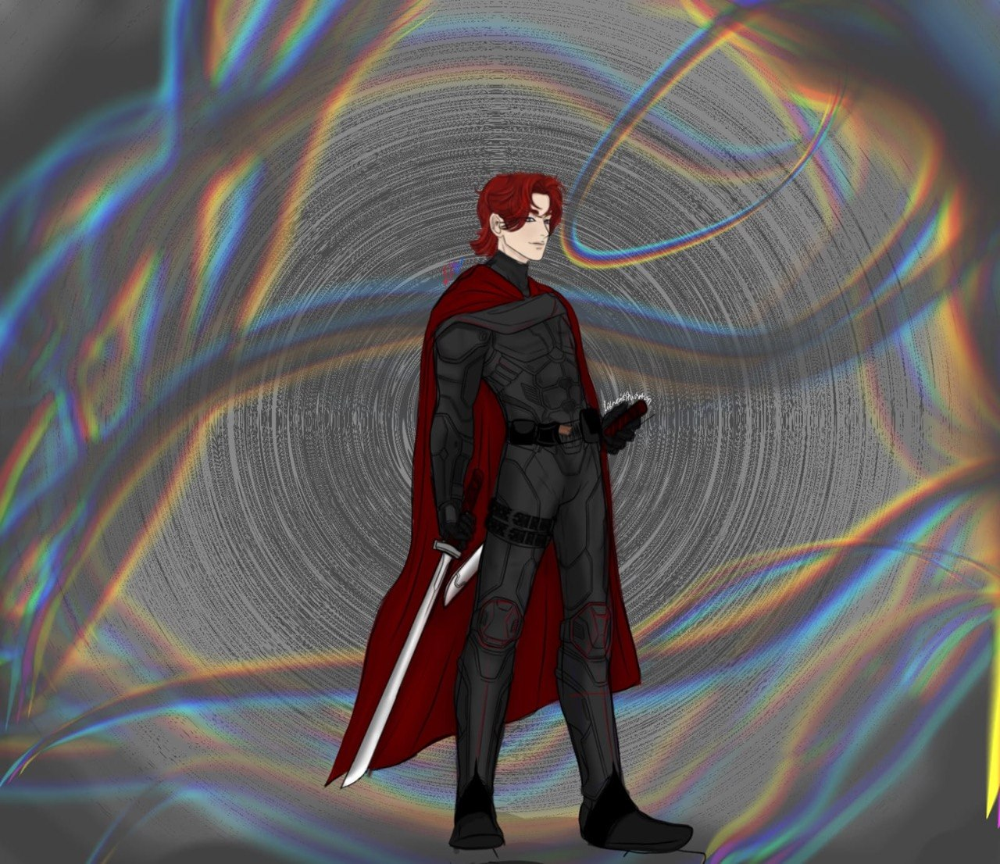
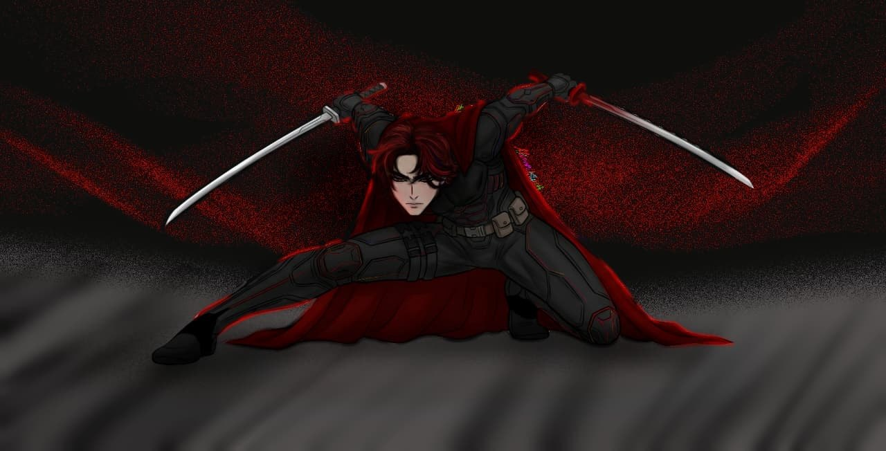
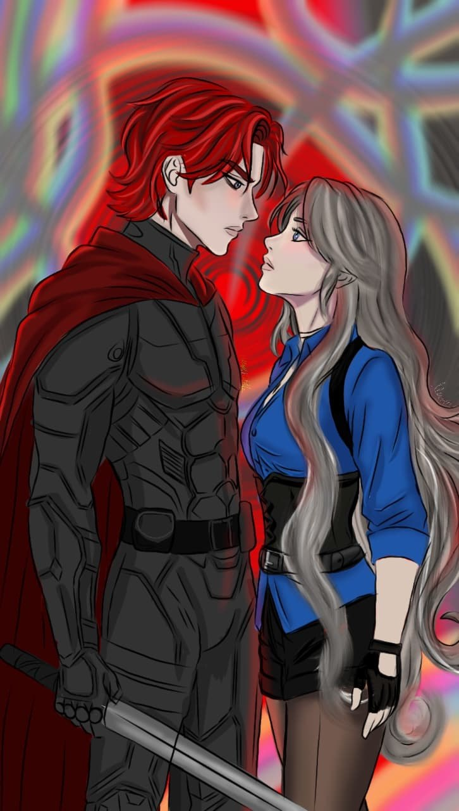
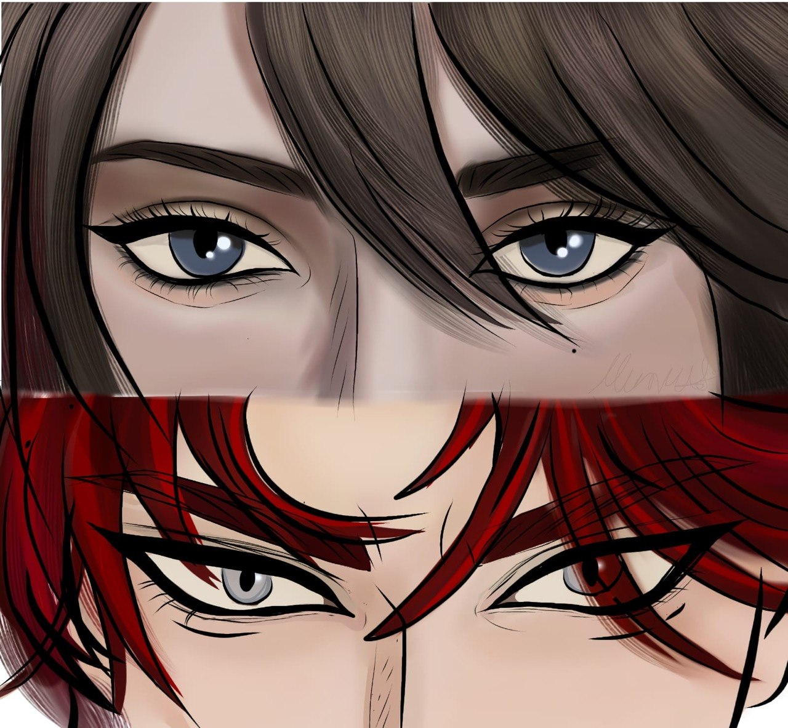
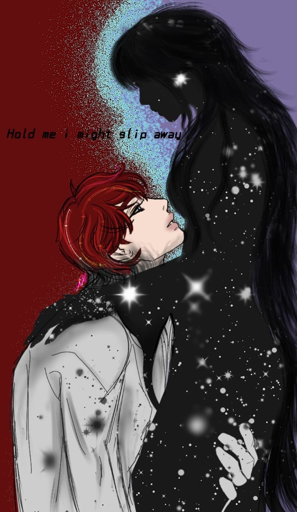

NIght

Sunny

Vasper
Story Summary
Story Summary Once, Vasper, Sunny, and Night were inseparable friends—until a mysterious event tore them apart.
Years later, Vasper is feared across the kingdom as the wielder of the Darkness, while Sunny and Night have become Hunters, sworn to stop him. Night believes Vasper is beyond saving, but Sunny still clings to the feelings she never forgot.
As their paths cross again, old memories, hidden truths, and painful choices begin to surface. Caught between love, loyalty, and destiny, they must uncover the secret that destroyed their friendship before the Darkness consumes everything they once called home.

Unleashing the Darkness With every swing of his blade, the Darkness answers his command. What the Hunters witness is not just overwhelming power, but the terrifying presence of a king whose strength was forged through years of pain and solitude.

Enemies Once Again After years apart, fate brings them face to face—not as childhood friends, but as enemies. Sent to kill the King of Darkness, Sunny discovers that the man standing before her is nothing like the monster she was taught to fear.

Beyond the Truth The closer Sunny gets to Vasper, the more the lies begin to unravel. Behind his cold gaze, she finds the same lonely soul she once knew, forcing her to choose between the truth and the duty she swore to protect.

Bound by Darkness When Sunny sacrifices herself to protect Vasper, he shares a part of his Darkness to save her life. From that moment on, their souls become forever connected, ending the Hunters' war and proving that even the deepest darkness can become a place called home.